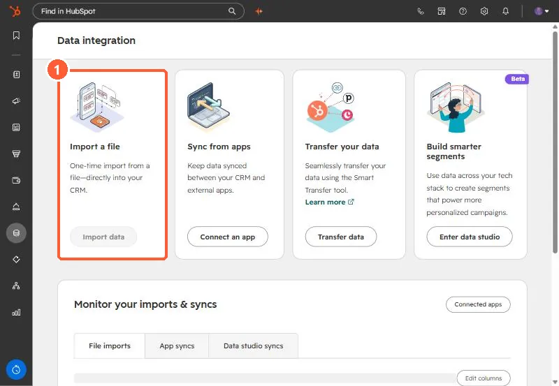
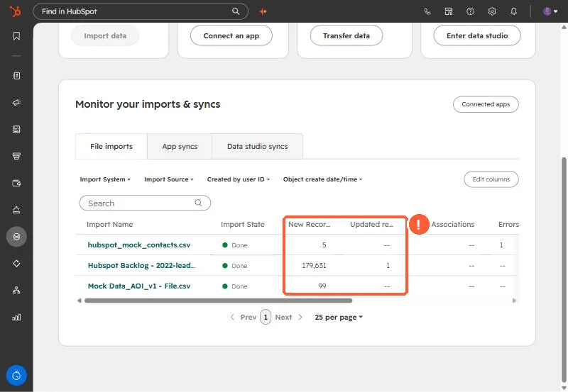
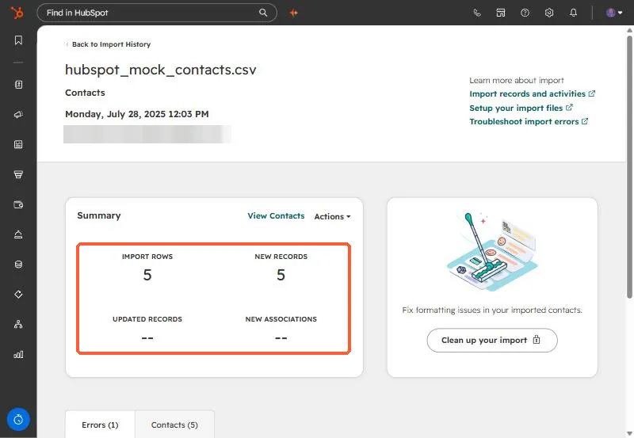
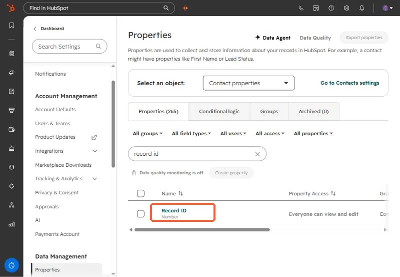
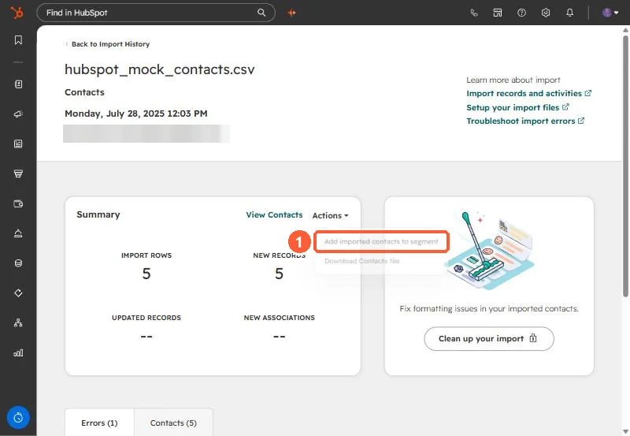
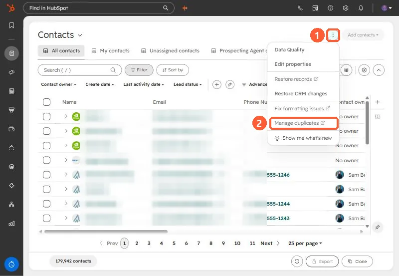
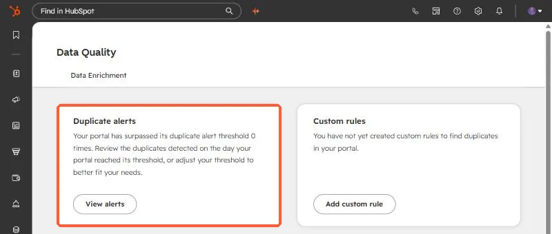

Short answer
HubSpot only matches an imported row to an existing record by a unique identifier: Email for contacts, Company domain name for companies, Record ID for any object, or a custom property set to require unique values. If that column is missing, empty, or mapped to the wrong property, every row becomes a new record. Check New versus Updated records on the import, isolate the import's records in a segment, merge, and map the identifier properly next time.
1. Confirm the import created the duplicates
Before merging anything, check what the import actually did. Go to Data integration (imports moved here from the old Imports page). The Import a file card starts new imports, and your past imports are listed underneath.


Scroll to Monitor your imports & syncs and look at the File imports tab. The two columns that matter are New records and Updated records. If you imported 500 people you already had and the import shows 500 new and 0 updated, that is your duplicate batch.


Click the import's name for the summary. It shows import rows, new records, updated records, and new associations side by side, plus an Errors tab.


HubSpot stops showing error details for imports older than one year. The count stays, but the reasons are gone, so review a bad import while the details are still there.
2. Why HubSpot created new records instead of updating
HubSpot does not compare names. It matches an imported row to an existing record only through a unique identifier:
- Email for contacts. If a contact with that email exists, the import updates it. Only mapped properties change, and nothing gets deleted.
- Company domain name for companies, using both primary and secondary domains.
- Record ID for any object. If you map Record ID, it overrides every other identifier in the file.
- A custom property that requires unique values, which you set on the property's Rules tab. You can have up to ten per object.


So duplicates usually come from one of these:
- No identifier column. Without Email (contacts) or Company domain name (companies), every row of the file becomes a new record.
- The column is there but mapped to the wrong property. If your "Email Address" column was mapped to a custom text property instead of HubSpot's Email property, HubSpot has nothing to match on. On the mapping screen, the correct identifier property shows a key icon.
- A Record ID column with blanks. Rows with an empty Record ID create new records, even if the email matches.
- Companies created by the API or a sync app. Those are not deduplicated by domain at all, so an import can match the wrong one or none.
One more behavior that looks like a bug: if two contacts already share the same email, the import does not pick one. It errors on that row and skips it.
3. Isolate the records that import created
Do not go hunting through the whole database. On the import summary, click Actions and choose Add imported contacts to segment. Now you have a list of exactly the records this import touched, which you can review, export, or work through one by one.


4. Merge the duplicates
HubSpot's duplicate manager pairs up likely duplicates for you. On the Contacts page, open the more-actions menu (the three dots at the top right, which replaced the old Actions button) and select Manage duplicates.


The duplicates tool lists suggested pairs and lets you merge or reject each one. It also shows duplicate alerts and any custom rules.


- Reviewing pairs one at a time needs a Professional or Enterprise subscription and shows up to 10,000 pairs.
- Bulk merging and custom duplicate rules need Data Hub Professional or Enterprise.
- By default HubSpot compares first name, last name, email, IP country, phone number, zip code, and company name for contacts.
- You need Data quality tools access plus edit access to all contacts (or Super Admin) to use it.
A merged record cannot be split back apart. Spot-check a few pairs before you merge in bulk, especially when two people share a generic inbox like info@ or sales@.
5. Set up the next import so it updates
- Contacts: include an Email column and map it to HubSpot's Email property, the one with the key icon.
- Companies: include Company domain name in the plain domain format (example.com, no https or www).
- Updating anything else (deals, tickets, custom objects): export the records first with their Record ID, edit the export, and import it back with Record ID mapped.
- No email or domain? Export existing records with Record ID, match them to your file with VLOOKUP, and split the file into one import of matched rows (with Record ID) and one of genuinely new rows.
Sources
- HubSpot Knowledge Base: Deduplicate records in HubSpot (last updated September 25, 2026)
- HubSpot Knowledge Base: Understand the import tool
- HubSpot Knowledge Base: Import records for multiple objects
- HubSpot Knowledge Base: Review and manage duplicate records
- HubSpot Knowledge Base: Review and troubleshoot import errors